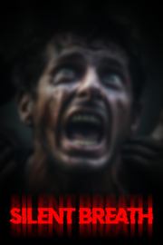

silent bREATH
Detalles
|  | |
| Tiempo de juego | No Jugado |
| Última actividad | Nunca |
| Añadido | 11/13/2024 0:35:38 |
| Modificado | 11/13/2024 1:09:50 |
| Estado de finalización | No Jugado |
| Librería | Playnite |
| Fuente | PORCHE |
| Plataforma | PC (Windows) |
| Fecha de lanzamiento | |
| Puntuación de la Comunidad | 69 |
| Puntuación de la Crítica | |
| Puntuación de usuario | |
| Género | Acceso anticipado Aventura Indie Simuladores |
| Desarrollador | EXODIAC STUDIOS |
| Editor | EXODIAC STUDIOS |
| Característica | Compat. Total Con Mando Logros De Préstamo Familiar Un Jugador |
| Enlaces | Punto de encuentro Discusiones Guías Noticias Página de la tienda PCGamingWiki Logros |
| Tag | Acceso anticipado Años 90 Aventura Exploración Finales múltiples Indie Inteligencia artificial Misterio Muerte permanente Multijugador Mundo abierto Oscuros Primera persona Realistas Simulación Simulador de caminar Suspense Terror Terror psicológico Un jugador |
Descripción

What is This Game?
"Silent Breath" is a horror experience powered by Unreal Engine 5. Featuring photorealistic graphics, fully dynamic scares and microphone detection.How Do I Play?
You find yourself in the middle of a mysterious forest. Your goal is to find people who have previously gotten lost in the forest. You must be SILENT at night because the forest is listening to your voice through your microphone as you explore. It tries to make you SCREAM with various jumpscares. When you scream, you get one step closer to losing. You also have to constantly check your surroundings because real threats that are trying to hunt you down are on your tail. You lose when you scream or get caught by threats, and the game restarts, but this time the locations of the previously found lost people have also changed. You can't even predict what fear the game will throw at you at any given time because the whole process is randomized.Game Features
- Microphone Detection
- Unpredictable FULL Dynamic Jumpscares
- Found-Footage - VHS Style Graphics
- Different AI's Hunting You Down
- Photorealistic Environment
- Huge Forest with Different Locations in Every Direction
- Replayability (Scares and missing person locations are dynamically randomized every playthrough, making each playthrough a unique experience.)
Game Lore
After a night you can't remember, you find yourself at a familiar-looking crime scene. You notice that a body has been found, with his own missing person's poster attached to his chest.This forest has a reputation for a reason. People have been coming here for years to experience different types of horror, but most of them have never returned. You think you can find more missing people after this one, but be careful. There are many threats in the forest that can kill you, including yourself.
There are so many places to explore.
Discover a different direction in each playthrough, as a unique experience awaits you every time. Getting lost in the forest can even be an exciting adventure for you.
Your microphone is your enemy!
You must be silent at night in the forest, and staying silent when faced with fear will be a challenge to yourself!
The Sisters of the Forest
The sisters who have been rumored to roam the forest for years. They come out to hunt at night, playing games with you. You must face them!
Watch your back at all times
There are many threats that can approach you from behind and kill you. You should be careful around you!